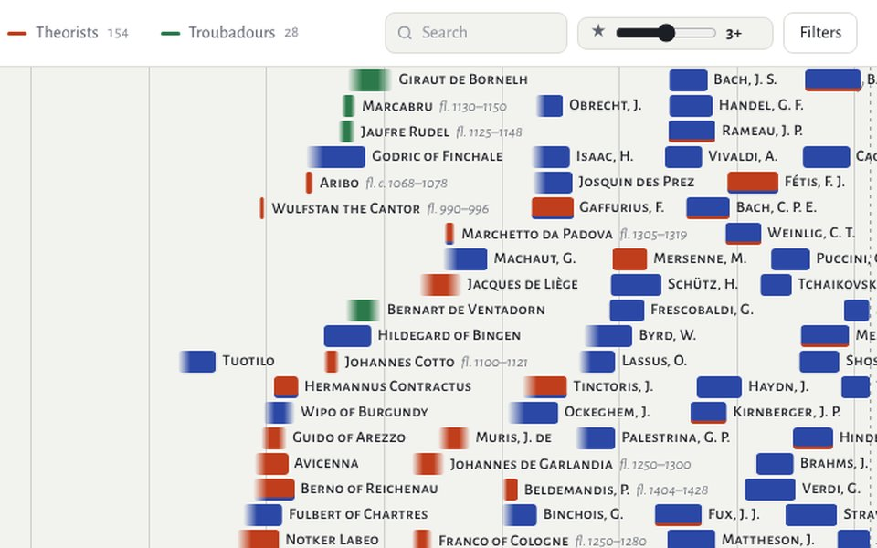
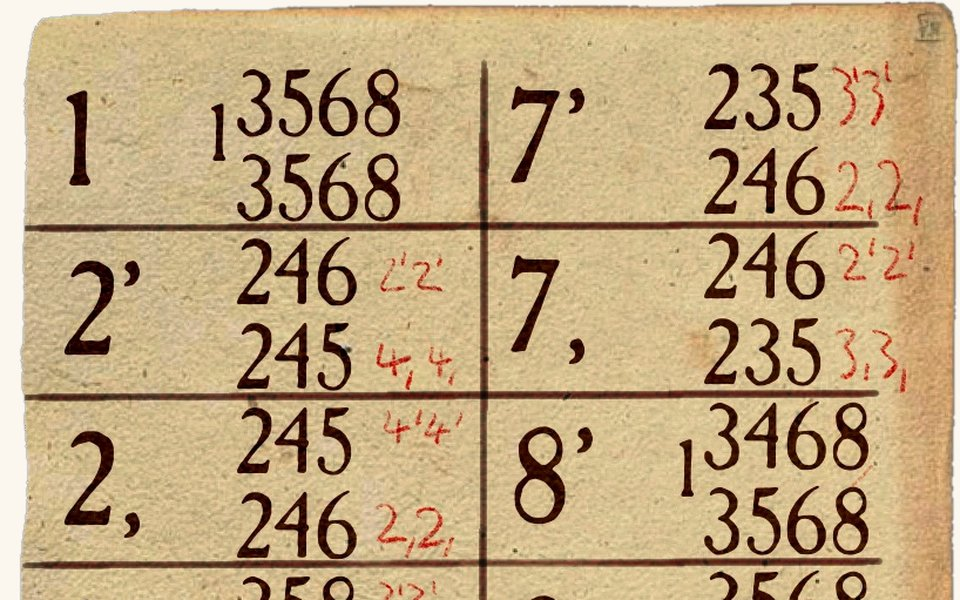
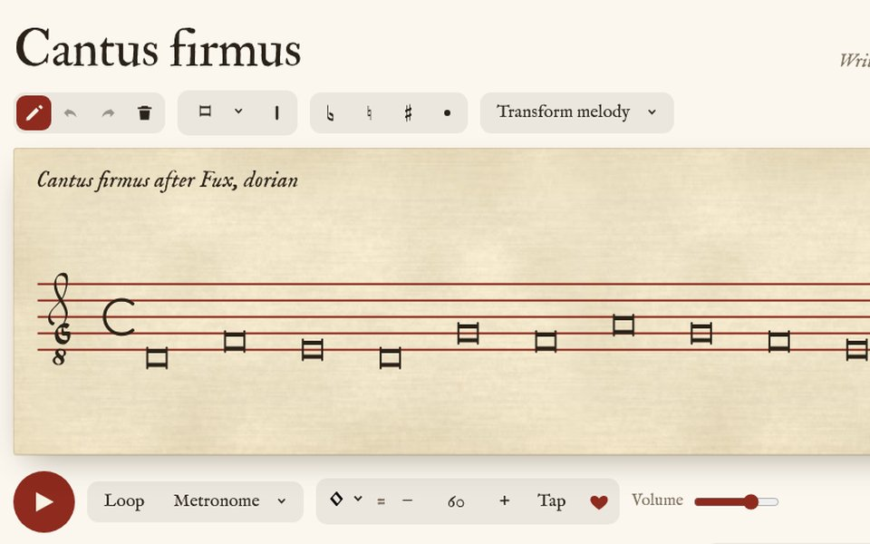
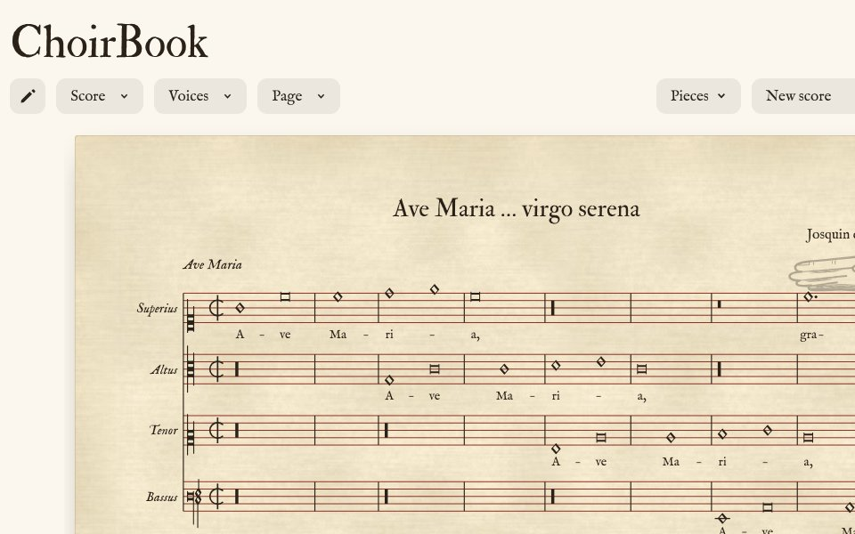
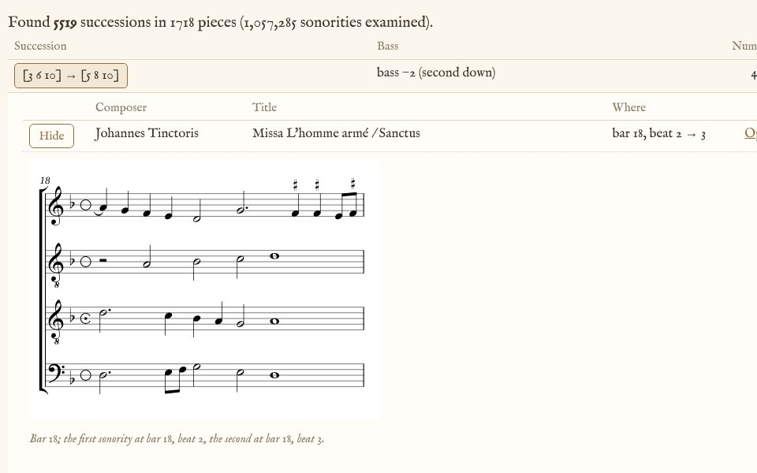

Hi, welcome to my website.
Here I share some of the projects I’ve built, mostly with AI. My aim is to make useful tools for the study of early music.
-

Timelines
An interactive timeline of composers.
-

Mensurator
A silly game on a musical staff.
-

Canon Canonum
A cheat sheet for improvising canons.
-

CantusFirmus
A tool for practicing singing counterpoint.
-

ChoirBook
-

ReDiX Progressio